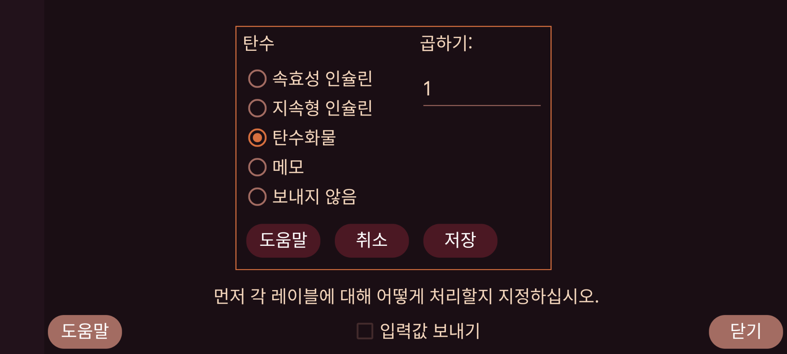

ar be de es fr hi it ja ko nl pl pt ru tr uk uz zh en
LibreView와 같은 방식으로 Juggluco의 Nightscout 서버를 통해 입력값을 어떤 형식으로 나타낼지도 지정할 수 있습니다.
Juggluco에서 특정 레이블 아래 입력한 입력값을 LibreView로 어떻게 보낼지 선택합니다. 서로 다른 종류의 입력값을 같은 LibreView 레이블로 보낼 수도 있습니다. 예를 들어 Juggluco에서 탄수화물 음식과 순수 포도당 음식을 서로 다른 레이블로 기록한다면 둘 다 LibreView에 탄수화물 로 보내도록 지정할 수 있습니다.
탄수화물의 경우 Juggluco에 입력한 양에 특정 수를 곱하여 다른 단위를 그램으로 변환할 수 있습니다. Juggluco에서 10g 단위의 1회분을 세어 입력한다면 여기에 10을 입력하여 LibreView에는 그램으로 보내도록 할 수 있습니다.
메모 는 LibreLink에서 메모를 추가한 것처럼 입력값을 LibreView로 보낸다는 뜻입니다. 메모를 지정하면 레이블과 그 레이블 아래 입력한 숫자를 함께 보냅니다. 예:자전거 50”. 예를 들어 레이블이 “자전거”이고 그 레이블 아래 “50”을 입력했다면 “자전거 50”이 지정한 시각의 LibreView “일별 로그” 그래프 아래에 표시됩니다.